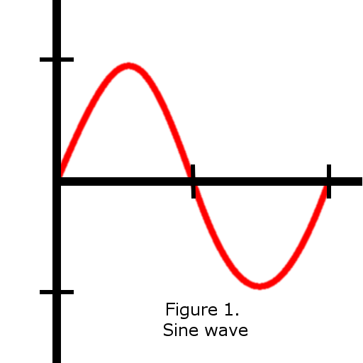
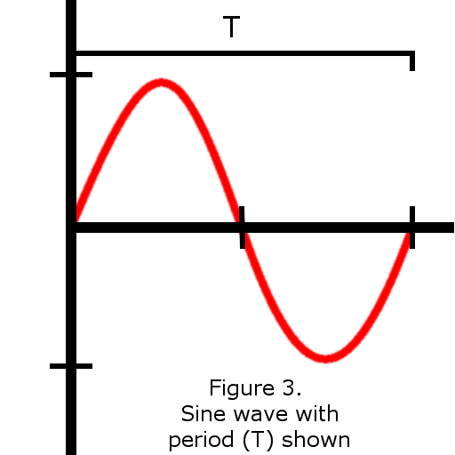
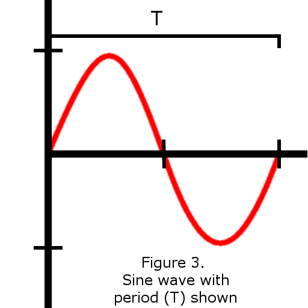
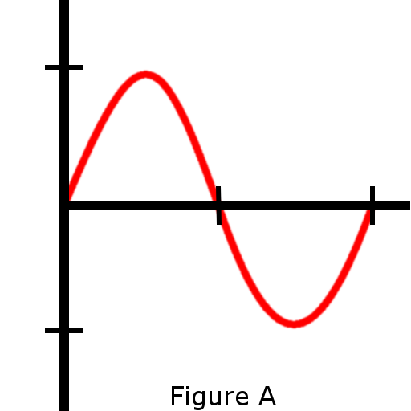
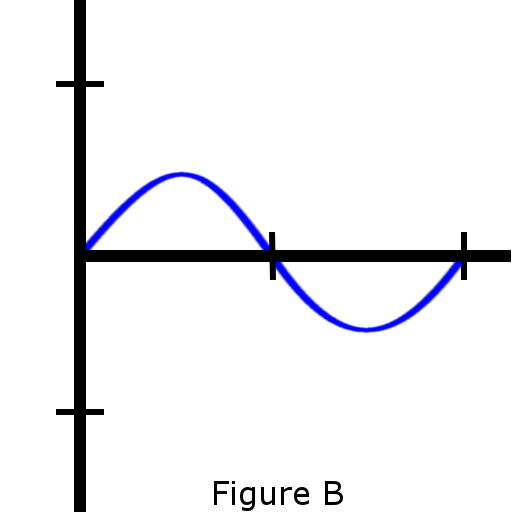
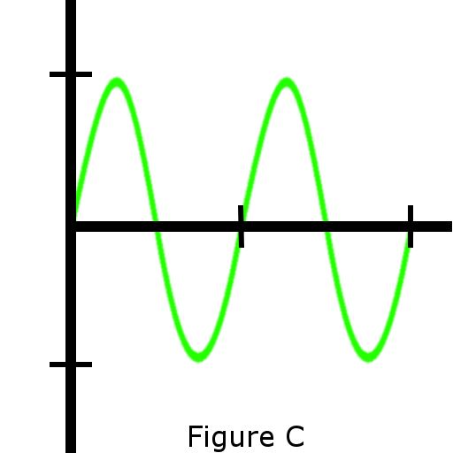

Sine Wave: Intro
Terms that define or describe the shape of a sine are:
Amplitude - The height of the sine wave from top to bottom, or peak to peak. Here denoted with the symbol A. The larger the amplitude, the more distance there is from peak to peak of the sine wave.
Period - The time it takes for one full cycle of a sine wave to be complete. Here denoted with the symbol T. The longer the period, the more time it takes to complete one cycle of a sine wave.
Frequency - The number of cycles it completes in one second. Here denoted the symbol f There is a simple inverse relationship between the frequency and time period f = 1/T. The larger the frequency, the more cycles per second are completed.
A sine wave is represented by the equation y(x)= A*sin(2*pi*f*x)
 

Review questions for sine wave terminology. Use the figures below
  1.) Figure A has a _______ amplitude than Figure B.
a.) lesser
b.) greater
c.) equal
2.) Figure A has a _______ period than Figure C.
a.) shorter
b.) longer
c.) equal
3.) Figure A has a _______ frequency than Figure C.
a.) lesser
b.) greater
c.) equal
answers: 1.) b. 2.) b. 3.) a.